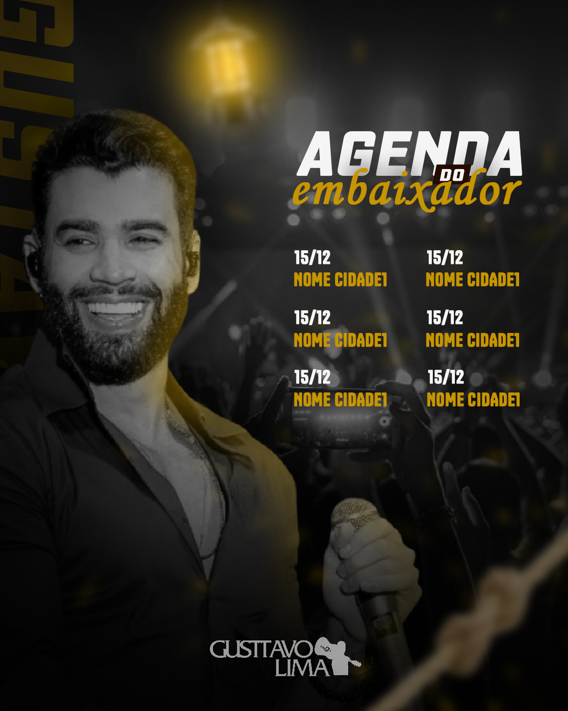

Flyer para Agenda de Shows – Design Profissional para Eventos Musicais
Se você precisa divulgar uma agenda de shows com impacto visual, clareza e identidade profissional, o design do seu flyer é um dos fatores mais importantes para atrair público e gerar interesse no evento.

Eu crio flyers para agenda de shows voltados para eventos musicais, casas de espetáculo, bares, artistas e produtores que precisam comunicar várias atrações de forma organizada, moderna e chamativa.
O que é um Flyer de Agenda de Shows?
O flyer de agenda de shows é uma peça visual que reúne as atrações de um evento ou período específico, destacando datas, artistas e informações importantes de forma clara e atrativa.
Esse tipo de arte é muito usado por:
- Casas de shows e eventos
- Bares e restaurantes com música ao vivo
- Produtores de eventos musicais
- Artistas e bandas em turnê
Por que um bom design faz diferença?
Um flyer mal feito pode fazer o público ignorar completamente a divulgação. Já um design profissional:
- Aumenta a atenção nas redes sociais
- Melhora o entendimento das informações
- Passa mais credibilidade para o evento
- Ajuda a gerar mais público e engajamento
O objetivo não é apenas “deixar bonito”, mas sim criar uma peça visual estratégica que comunique e venda o evento.
Como funciona o processo de criação
O desenvolvimento do flyer segue um processo simples e organizado:
- Você envia as informações do evento (datas, artistas, tema)
- Analiso o estilo do evento e referências visuais
- Crio uma composição visual focada em impacto e legibilidade
- Você recebe a prévia para ajustes
- Entrega final em alta qualidade pronta para divulgação
Diferenciais do meu trabalho
- Design focado em eventos reais e público-alvo
- Composição pensada para redes sociais (Instagram, WhatsApp, etc.)
- Entrega rápida e comunicação direta
- Foco em destacar informações importantes sem poluir o visual
Exemplos de uso do flyer de agenda de shows
Esse tipo de arte pode ser usado para divulgar:
- Programação semanal de bar ou casa de show
- Line-up de festival ou evento especial
- Turnês de artistas ou bandas
- Eventos sazonais (São João, Carnaval, etc.)
Por que escolher um designer especializado?
Um designer que entende eventos musicais consegue criar peças mais estratégicas, levando em conta hierarquia visual, leitura rápida e impacto em redes sociais.
Isso faz diferença principalmente em um cenário onde o público decide em segundos se vai prestar atenção ou não na divulgação.
Conclusão
Se você precisa de um flyer de agenda de shows profissional, com foco em atrair atenção e divulgar seu evento de forma clara e impactante, posso criar uma arte personalizada para o seu projeto.
Cada design é feito de forma estratégica, pensando não apenas na estética, mas na comunicação e no resultado final do seu evento.
Solicite seu flyer
Entre em contato para criar sua agenda de shows personalizada com design profissional.